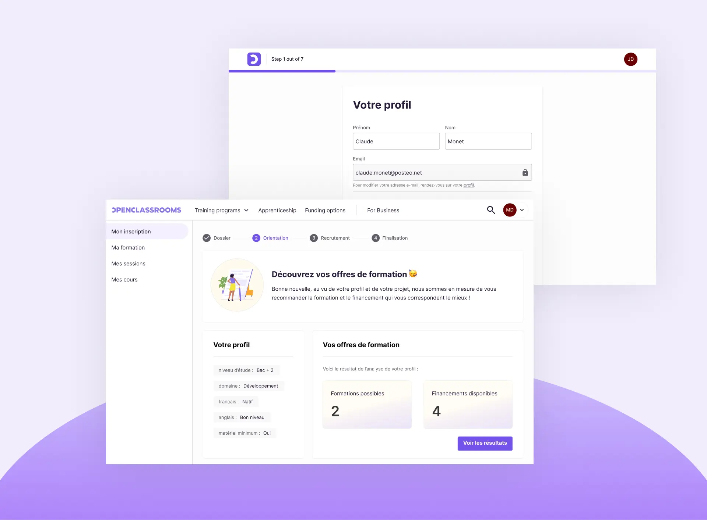

Janvier 2021 - Avril 2023
OpenClassrooms est une école en ligne dont la mission est de rendre l'éducation accessible.

Le produit est une plateforme (web + app) qui gère à la fois l'inscription à un programme de formation (Tribe Enrollment : Acquisition, Admission, Activation) et l'ensemble du cycle de formation (Tribe Training) menant à un diplôme.